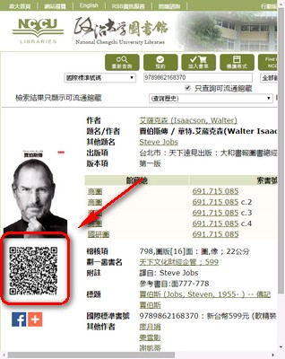

<ons-page id="main_html" ng-device-backbutton="main_back()">

    <ons-toolbar>
        <div class="left">
            <ons-toolbar-button ng-click="app.menu.open()" class="menu-open">
                <span class="toolbar-button--quiet navigation-bar__line-height" >
                    <i class="ion-navicon"></i>
                </span>
            </ons-toolbar-button>
        </div>

        <div class="center">{{ 'TODO_LIST' | translate}}</div>

        <div class="right" ng-click="clear_todo_list()">
            <ons-toolbar-button>
                <i class="icon ion-close-circled"></i>
            </ons-toolbar-button>
        </div>
    </ons-toolbar>

    <form id="scan_barcode" ng-submit="add();">
        <ons-row style="width: calc(100% - 20px);margin: 0 auto;">


            <ons-col width="120px" ng-click="scan_barcode_help()">
                <ons-button id="search_barcode_button" modifier="cta">
                    <ons-icon icon="ion-qr-scanner" ></ons-icon>

                    {{ 'SCAN_BARCODE' | translate }}
                </ons-button>
            </ons-col>
            <!--
            <ons-col width="120px" ng-click="scan_barcode()">
                <ons-button id="search_barcode_button" modifier="cta">
                    <ons-icon icon="ion-ios-barcode-outline" ></ons-icon>
                    
                    {{ 'SCAN_BARCODE' | translate }}
                </ons-button>
            </ons-col>
            -->
            <ons-col>
                <input type="number" class="search-input" id="isbn" name="isbn"
                       value="{{isbn}}"
                       placeholder="{{ 'SEARCH_PLACEHOLDER' | translate }}" />
                <!--autofocus--> 
            </ons-col>

            <ons-col width="40px">
                <ons-button modifier="cta" ng-click="search()">
                    <ons-icon icon="fa-search"></ons-icon>
                </ons-button>
            </ons-col>

        </ons-row>
    </form>


    <ons-list ng-repeat="location in todo_list">
        <ons-list-item class="location" modifier="tappable chevron" class="list-item-container"  
                       ng-click="open_map(location.location)" ng-show="location.location !== ''">
            <div class="list-item-left">
                {{location.location}}
            </div>
            <div class="list-item-right">    
            </div>
        </ons-list-item>

        <ons-list-item modifier="tappable" 
                       ng-repeat="item in location.items"
                       class="list-item-container">
            <ons-row>
                <ons-col ng-click="complete_item(item.id, $event)" width="20px">
                    <ons-icon icon="ion-ios-circle-outline" size="20px"></ons-icon>
                </ons-col>
                <ons-col>
                    
                    <div class="title-col">
                        <span class="title">
                            {{item.title}}
                        </span>
                        <span class="call_number">
                            {{item.call_number}}
                        </span>
                    </div>
                </ons-col>
                <ons-col width="50px" align="right"
                         ng-click="show_todo_list_popover(item.id, item.isbn, $event)">
                    <ons-icon icon="ion-ios-more" ></ons-icon>
                </ons-col>
            </ons-row>

        </ons-list-item>
    </ons-list>

    <!-- ------------------------------------------- -->

    <ons-fab class="fab" style="">
        <label for="isbn" class="fab__icon">
            <ons-ripple class="ripple"><span class="rippledisplay: block; position: absolute;__wave"></span></ons-ripple>
            <ons-icon icon="ion-search" ></ons-icon>
        </label></ons-fab>

    <!-- =============================================== -->

    <ons-modal var="scan_help_modal" ng-click="scan_help_modal.hide();
        scan_barcode();" class="scan-help-modal">
        
        <div class="message">
            請掃描圖書館網頁上的QR Code
        </div>
        <label class="message"  ng-click="$event.stopPropagation();">
            <input type="checkbox" id="scan_help_disable" />
            下次不要提示
        </label>
        <ons-button>
            開始掃描
        </ons-button>
    </ons-modal>
</ons-page>